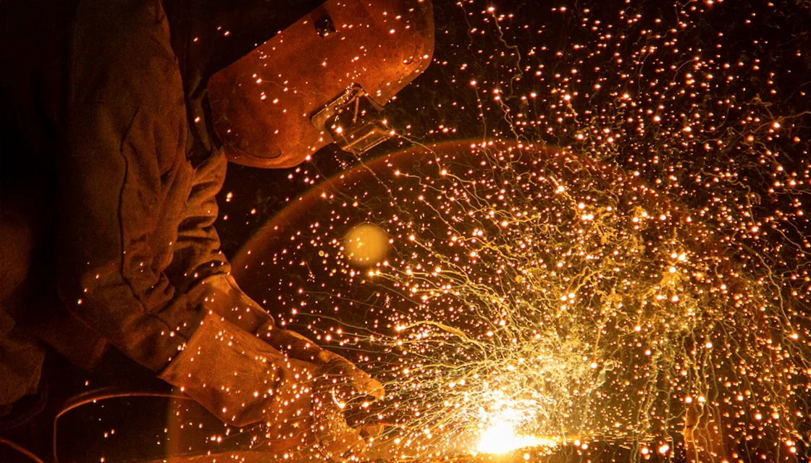

WONKANG / COMPONENTS01 — 04
일반 펌프부품
 WONKANG
WONKANGGENERAL PUMP

01 / ABOUT WONKANG
경험이 깊어질수록, 기술은 정밀해집니다.금속을 다루는 일은
산업의 신뢰를 만드는 일.
원강금속은 1988년 창사 이래 금속 주조 기술과 품질에 집중해 왔습니다. 소재의 이해부터 공정 관리, 정밀한 검사까지. 축적된 경험으로 고객의 요구에 답합니다.
우리의 제조 방식
BUILT ON EXPERIENCE
주조 기술을 향한 꾸준한 발걸음
공식 홈페이지 공개 실적 기준
소재에 대한 이해와 기술의 축적
02 / CASTING SOLUTIONS
전체 카탈로그다양한 사용 환경에 대응하는
원강금속의 네 가지 제품 솔루션.
WONKANG WONKANG
WONKANG WONKANG
WONKANG WONKANG
WONKANGEXPLORE OUR PRODUCTS
소재·형상·사용 조건에 맞춘 주조부품.
구체적인 사양은 기술상담을 통해 확인해 주세요.
03 / MAKING PRECISION
FROM DESIGN TO QUALITY검토부터 최종 검사까지.
하나의 품질로 이어지는 여덟 가지 공정.

01 / DESIGN & PATTERN
제품의 요구 조건과 형상을 검토하고, 주조의 시작이 되는 목형을 준비합니다.
01 검토 / 02 목형
02 / METAL CASTING
준비된 주형에 금속 용탕을 주입합니다. 축적된 경험과 공정 관리로 제품의 기본 형상을 만듭니다.
03 주입
03 / HEAT & FINISHING
열처리와 후처리를 거쳐 주조품을 정리합니다. 제품의 요구 조건에 맞춰 다음 공정을 준비합니다.
04 열처리 / 05 후처리
04 / SCAN & MACHINING
3D 스캔으로 형상과 치수를 확인하고, 가공을 통해 제품의 완성도를 높입니다.
06 3D스캔 / 07 가공
05 / QUALITY INSPECTION
요구 규격과 검사 기준에 따라 제품을 검토합니다. 신뢰할 수 있는 품질을 위해 마지막까지 확인합니다.
08 제품검사04 / PROVEN QUALITY
공식 인증자료품질과 환경, 선급과 기술 특허.
공식 공개 자료로 확인하는 원강금속의 기준.


인증 범위 및 유효기간은 개별 자료와 기술상담을 통해 확인해 주세요.
05 / TRUSTED TOGETHER
국경과 산업을 넘어 이어지는
원강금속의 파트너십.
 KSB
KSB GOULDS PUMPS
GOULDS PUMPS FUKUI
FUKUI HYOSUNG
HYOSUNG KOBELCO
KOBELCO Kubota
Kubota FLOWSERVE
FLOWSERVE HP VALVES
HP VALVES MITSUBISHI HEAVY INDUSTRIES
MITSUBISHI HEAVY INDUSTRIES TORISHIMA
TORISHIMALET’S BUILD WHAT’S NEXT
제품의 가능성부터 구체적인 제작 조건까지.
도면, 재질, 수량을 알려주시면 검토에 도움이 됩니다.